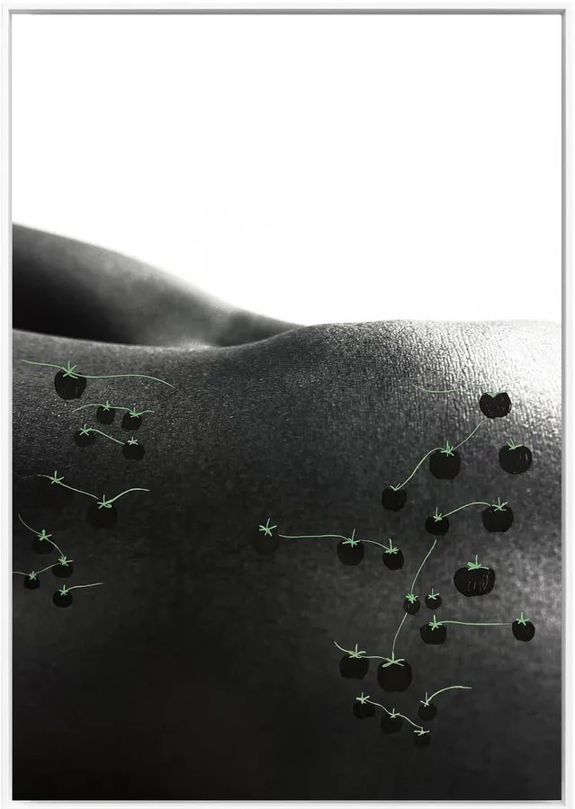

La pratique artistique de Binta Diaw se déploie au croisement de réflexions philosophiques et historiques sur les phénomènes sociaux qui façonnent notre monde contemporain - la migration, l'appartenance, le rapport à l'histoire et à ses archives, ainsi que les questions de genre. Son travail prend souvent la forme d'installations et de projets in situ, parfois de dimensions monumentales.
S'inspirant des pensées intersectionnelles et écoféministes, Binta Diaw accorde une place essentielle à l'expérience physique et sensorielle. Ses œuvres deviennent des espaces où la matérialité - ses textures, ses énergies et ses résonances - engage la perception et la réflexion. La terre, les plantes, l'eau, la pierre, les cheveux et parfois son propre corps composent un langage visuel qui rappelle sans cesse notre nature organique et mouvante, autant que notre condition d'êtres sociaux et politiques. Souvent conçues en dialogue avec leur environnement, ses installations invitent le spectateur à se reconnecter à sa place dans le monde pour appréhender la multiplicité des sens et des relations à l'œuvre.
Ancrée dans une identité diasporique et fluide, Binta Diaw interroge les récits dominants de l'histoire en y réintroduisant une pluralité de voix à travers une remarquable économie de moyens. Son travail propose ainsi un décentrement du regard exclusivement eurocentrique et affirme le geste artistique comme un acte complexe de réécriture de l'histoire. Télécharger le CV de l'artiste (PDF, opens in a new tab.) Privacy Policy Manage cookies Copyright © 2026 Galerie Cécile Fakhoury Site by Artlogic Go Souscrivez à notre bulletin Instagram , opens in a new tab. Facebook , opens in a new tab. This website uses cookies This site uses cookies to help make it more useful to you. Please contact us to find out more about our Cookie Policy. Manage cookies Reject non essential Accept Cookie preferences Check the boxes for the cookie categories you allow our site to use Cookie options Strictly necessary Required for the website to function and cannot be disabled. Preferences and functionality Improve your experience on the website by storing choices you make about how it should fu
Expositions à la galerie